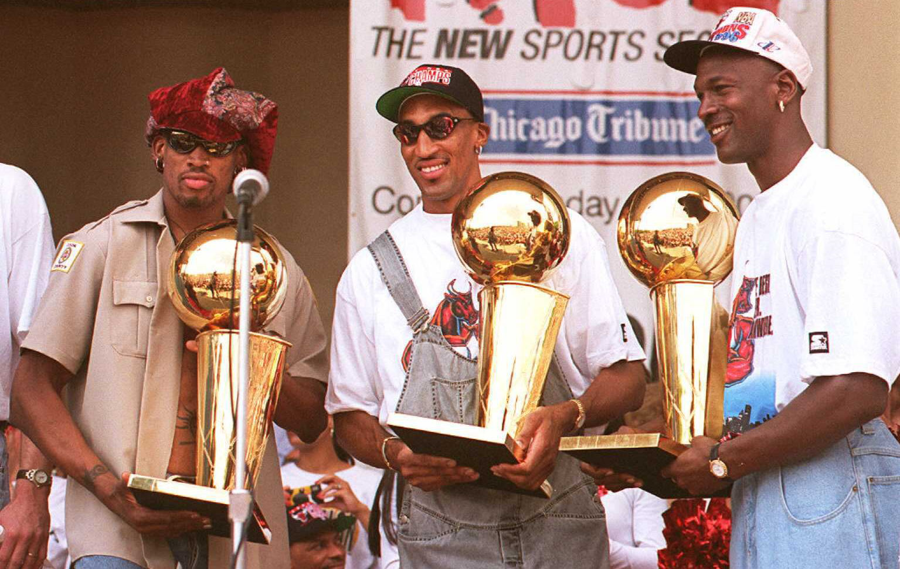

.png)
History
The Chicago Bulls joined the NBA for the 1966-67 season. The franchise struggled for the better part of a quarter century, occasionally putting excellent teams on the court, such as the tough units of the mid-1970s that featured Bob Love, Norm Van Lier, Jerry Sloan, and Tom Boerwinkle. More often, however, the Bulls worked hard for mediocre results. That all changed in the mid-1980s with the drafting of Michael Jordan, the dominant player of his era and possibly the greatest player of all time. Jordan won seven straight scoring titles with a combination of breathtaking slam dunks and a bag of thrilling shot-making tricks. He put up some of the biggest numbers in NBA history and wrote some of the most memorable chapters in the annals of the league. The addition of Scottie Pippen, another Hall of Famer, in 1987 would set the stage for one of sport's great dynasties.
In the early 1990s, the Bulls assembled a strong supporting cast for Jordan and Pippen which won three consecutive NBA titles, becoming only the third franchise in history to string together a trio of crowns. After more than a year of "retirement" to try his hand at professional baseball, Jordan returned to lead the Bulls back to another title in 1996, one more in 1997 and a third in a row in 1998, the Bulls' second three-peat of the decade and their sixth NBA championship trophy. After hearing for an entire offseason that he wasn't quite the same player as he had been when he abruptly retired in 1993, Michael Jordan was driven to lead the Bulls to the NBA championship for the fourth time in six years. His supporting cast included Scottie Pippen and Dennis Rodman, acquired in a preseason trade. Though a talented collection of players, no one could have predicted what the team would accomplish.

After losing to Seattle to fall to 10-2 in late November, the team won 31 of its next 32 games, including 14 during an undefeated January. Although they lost back-to-back games at Denver and Phoenix to avoid becoming the first team in NBA history to play an entire season without consecutive losses, their failures were few and far between. They were nearly invincible at home, going 37-0 (extending their home winning streak to 44) before losing to the Charlotte Hornets on April 8. At Milwaukee, on April 16, they achieved what many experts never thought possible - 70 wins - with a 86-80 decision over the Bucks. They finished 72-10, breaking the 69-13 record of the 1971-72 Los Angeles Lakers. Only the Indiana Pacers were able to beat the Bulls twice.
In doing so, the Bulls won many of the postseason awards: Jordan was named the league's Most Valuable Player and was the All-Star Game MVP. He led the league in scoring (30.4 ppg) ranked third in steals (2.20 spg), and 11th in three-point field-goal percentage. Pippen, long regarded as perhaps the best all-around player in the NBA, averaged 19.4 ppg, 6.4 rpg and 5.9 apg, and finished 12th in the NBA in steals. Rodman, who added an element of intrigue with his unique antics and unparalled rebounding ability, led the league in rebounds (14.9 rpg). Rodman, Jordan and Pippen were all named to the league's All-Defensive Team. Toni Kukoc won the NBA Sixth Man Award, and the supporting cast included Steve Kerr (second in three-point field goal percentage), Luc Longley (9.1 ppg) and Ron Harper (7.4 ppg).In the playoffs, the Bulls kept rolling, losing only one playoff game in series wins over Miami, New York and Orlando. In the Finals, the Bulls beat the Sonics in six games, finishing with a postseason record of 15-3, and an overall record of 87-13, the best in NBA history. Jordan was named the Finals MVP for the fourth time as he cemented his legend in the Windy City and in NBA annals

Ten years later, Chicago beat overwhelming odds to win the NBA Draft Lottery, meaning the Bulls had the top pick in the 2008 NBA Draft. Point guard Derrick Rose was the team's choice, and he has since led the Bulls to the playoffs in each of his professional campaigns, including a trip to the 2011 Eastern Conference Finals. In Rose's third season, he became the youngest player in NBA history to earn MVP honors. Honors: Derrick Rose earned Eastern Conference T-Mobile Rookie of the Month honors for the months of November, December and March, and became the first Bull since Ben Gordon in 2004-05 to claim the accolade three times in a single season. Derrick Rose won the PlayStation Skills Challenge at All- Star Weekend in Phoenix. Rose joined Michael Jordan and Elton Brand (co-ROY) as the third Bulls player to win the Rookie of the Year Award when he was named the 2008-09 T-Mobile NBA Rookie of the Year winner. Rose was also a unanimous selection to the 2008-09 T-Mobile NBA All-Rookie First Team.